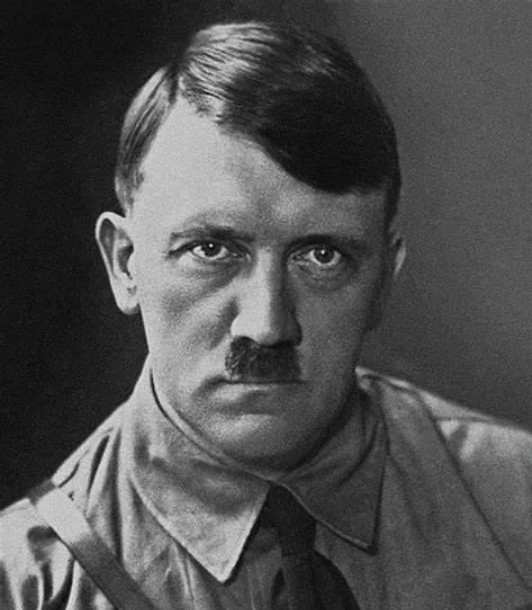

SumberADOLF HITLER adalah pemimpin Nazi Jerman (1933–1945) yang memulai Perang Dunia II (1939–1945) dan bertanggung jawab atas Holocaust, pembantaian jutaan orang, termasuk enam juta orang Yahudi.
Nama Lengkap: Adolf Hitler Lahir: 20 April 1889, Braunau am Inn, Austria-Hongaria Meninggal: 30 April 1945, Berlin, Jerman Jabatan: Kanselir Jerman (1933–1945), Führer (Pemimpin) Nazi Jerman (1934–1945) Partai: Partai Nazi (NSDAP)
Hitler lahir di Austria dan bercita-cita menjadi seniman, tetapi ditolak masuk Akademi Seni Wina. Menganggur di Wina, ia mulai mengembangkan ide-ide nasionalisme ekstrem dan antisemitisme. Bergabung dengan Tentara Jerman dalam Perang Dunia I (1914–1918) dan merasa kecewa setelah Jerman kalah.
1920: Bergabung dengan Partai Pekerja Jerman, yang kemudian menjadi Partai Nazi. 1923: Memimpin Kudeta Beer Hall Putsch di Munich, tetapi gagal dan dipenjara selama 9 bulan. Dalam penjara, ia menulis Mein Kampf, buku yang menjelaskan ideologinya tentang ras, nasionalisme, dan ekspansi Jerman. 1933: Diangkat sebagai Kanselir Jerman dan mulai membangun kediktatoran Nazi. 1934: Setelah kematian Presiden Paul von Hindenburg, Hitler menyatukan jabatan Kanselir dan Presiden menjadi "Führer".
1. Kebijakan Ekonomi dan Propaganda Membangun proyek infrastruktur besar (seperti Autobahn). Menggunakan propaganda dan kontrol media untuk membentuk opini publik. 2. Perang Dunia II (1939–1945) 1939: Hitler menyerang Polandia, memulai Perang Dunia II. 1940: Menaklukkan Prancis, Belgia, Belanda, dan sebagian Eropa. 1941: Menyerang Uni Soviet (Operasi Barbarossa), tetapi gagal merebut Moskwa. 1944–1945: Menghadapi kekalahan dari Sekutu (AS, Inggris, Uni Soviet). 3. Holocaust dan Kejahatan Perang Bertanggung jawab atas Holocaust, pembantaian sistematis enam juta orang Yahudi. Jutaan orang lainnya, termasuk kaum Romani, Slavia, dan penyandang disabilitas, juga menjadi korban. AKHIR HIDUP 30 April 1945: Hitler bunuh diri di bunker Berlin bersama istrinya, Eva Braun, ketika pasukan Soviet mengepung kota. Jerman menyerah pada 8 Mei 1945, mengakhiri Perang Dunia II di Eropa.
❌ Dampak Negatif: Bertanggung jawab atas kematian lebih dari 50 juta orang dalam Perang Dunia II. Holocaust menjadi salah satu kejahatan kemanusiaan terbesar dalam sejarah. Meninggalkan Jerman dalam kehancuran setelah perang. Hitler tetap menjadi simbol kejahatan dan kebrutalan, dengan ideologinya yang ekstrem ditolak secara global.